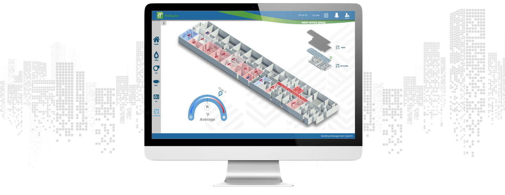
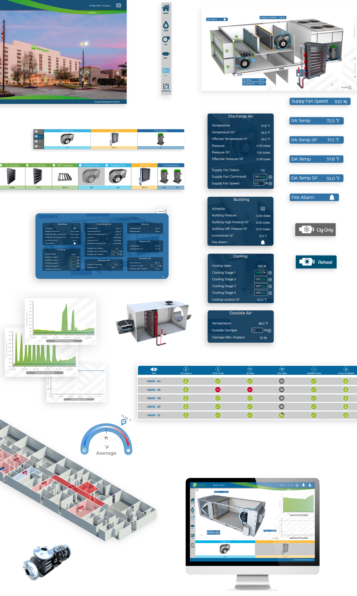
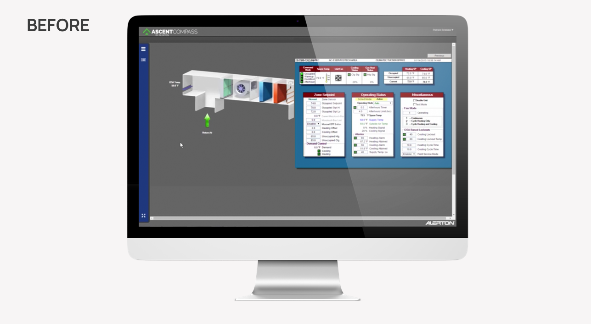

Reducing building energy consumption.
Building Energy Management System

Overview
A Building Energy Management System is a computer-based control system installed in buildings that controls and monitors the building's mechanical and electrical equipment such as ventilation, lighting, power systems, fire systems, and security systems.
My Role
Transform the default user interface into a friendlier system capable of communicating big amounts of data. Ideate and create assets and widgets for the development process.
The Heuristic Evaluation
mBuilding energy management systems are complex software that collects a large amount of data coming from different types of sensors. In the market of building management there are specialised products that help engineers to put together the entire system including a UI template. Considering the short time I got for this project; I decided to apply a heuristic evaluation on previous projects that used these UI templates. From the heuristic evaluation I got the following top 5 design priorities to consider for this project.
The problem
- UI is difficult to navigate through and the data displayed on the screens are not necessarily organized.
- Final users express that working with these systems is very challenging and time-consuming.
- The images that the templates use to represent equipment and floorplans are vidusualy to war away from reality.
User Flows
The next thing to do for this project was to define the information architecture and the user flow of the project. This task is usually taken during a meeting with engineers, project managers, and designers. We all take a look to the building floor layouts, electrical plans, ventilation plans, and equipment diagrams and organize all the information we need to complete the project. Here is where I discuss UI ideas with the team and take design decisions.
Inspiration and brainstorming
Before starting each project I like to take some time to look for visual inspiration and explore possible UI designs. Please find below a little bit of what I did for this project.
Implementation
Once I defined the color palette and visual design style I defined UI elements considering sizes, position and information hierarchy. I created mockups and delivered all the UI elements needed to the development team.

The final result
And I am the after image.

I am the before image.

↑
Drag this line to the right and left to see the changes.